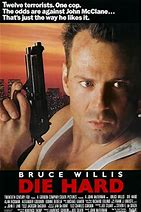
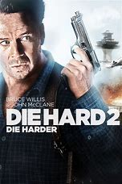

|  |
1.
Die Hard
(1988)
2hr 12min | Action, Thriller
 8.2/10
 72
Official Trailer
|
NYPD cop John McClane goes on a Christmas vacation to visit his wife Holly John McTiernanin Los Angeles where she works for the Nakatomi Corporation. While they are at the Nakatomi headquarters, a group of robbers led by Hans Gruber take control of the building and hold everyone hostage, with the exception of John, while they plan to perform a lucrative heist. Unable to escape and with no immediate police response, John is forced to take matters into his own hands. |
Bruce Willis
William Atherton
Bonnie Bedelia
|
Renny Harlin
|
|  |
2.
Die Hard 2
(1990)
2hr 4min | Action, Thriller
7.2/10
67
Official Trailer
|
After the terrifying events in LA, John McClane (Willis) is about to go through it all again. A team of terrorists, led by Col. Stuart (Sadler) is holding the entire airport hostage. The terrorists are planning to rescue a drug lord from justice. In order to do so, they have seized control of all electrical equipment affecting all planes. With no runway lights available, all aircraft have to remain in the air, with fuel running low, McClane will need to be fast. |
Bruce Willis
William Atherton
Bonnie Bedelia
|
Renny Harlin
|
|
3.
Die Hard with a Vengeance
(1995)
2hr 8min | Action, Thriller, Adventure
7.6/10
58
Official Trailer
|
John McClane is now almost a full-blown alcoholic and is suspended from the NYPD. But when a bomb goes off in the Bonwit Teller Department Store the police go insane trying to figure out what's going on. Soon, a man named Simon calls and asks for McClane. Simon tells Inspector Walter Cobb that McClane is going to play a game called "Simon Says". He says that McClane is going to do the tasks he assigns him. If not, he'll set off another bomb. With the help of a Harlem electrician, John McClane must race all over New York trying to figure out the frustrating puzzles that the crafty terrorist gives him. But when a bomb goes off in a subway station right by the Federal Reserve (the biggest gold storage in the world) things start to get heated. |
Bruce Willis
Jeremy Irons
Samuel L. Jackson
|
John McTiernan
|
|
4.
Live Free or Die Hard
(2007)
2hr 12min | Action, Thriller
7.1/10
69
Official Trailer
|
When someone hacks into the computers at the FBI's Cyber Crime Division; the Director decides to round up all the hackers who could have done this. When he's told that because it's the 4th of July most of their agents are not around so they might have trouble getting people to get the hackers. So he instructs them to get local PD'S to take care of it. And one of the cops they ask is John McClane who is tasked with bringing a hacker named Farrell to the FBI. But as soon as he gets there someone starts shooting at them. McClane manages to get them out but they're still being pursued. And it's just when McClane arrives in Washington that the whole system breaks down and chaos ensues. |
Bruce Willis
Justin Long
Timothy Olyphant
|
Len Wiseman
|
|
5.
A Good Day to Die Hard
(2013)
1hr 38min | Action, Thriller
5.3/10
28
Official Trailer
|
Iconoclastic, take-no-prisoners cop John McClane, for the first time, finds himself on foreign soil after traveling to Moscow to help his wayward son Jack - unaware that Jack is really a highly-trained CIA operative out to stop a nuclear weapons heist. With the Russian underworld in pursuit, and battling a countdown to war, the two McClanes discover that their opposing methods make them unstoppable heroes. |
Bruce Willis
Jai Courtney
Sebastian Koch
|
John Moore
|